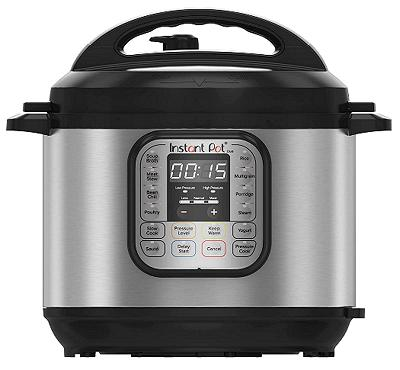

Multi-Cookers
Son of the Rice Cooker, these high tech programmable devices can imitate
multiple other electric cooking devices, including rice cookers, with pre-set
selectable programs and custom programs.Typical functions are:
- Pressure Cooker Some can do this, others can not.
- Slow Cooker Automatic timing and shift to warm.
- Rice Cooker All the usual rice cooker features.
- Steamer Most come with a steamer rack.
- Sauté Limited surface area though.
- Yogurt Maker Good low temperature control.
- Sterilizer Steam and pressure.
- Souse Vida Some models - nota all.
- Air Frier A few models.
Common sizes are 4 quart, 6 quart, and 8 quart.
Photo ©source
Instant Brands.
More on Kitchen Gear
Caution:
Pressure Cookers are sized by full capacity in
Liters or Quarts - but only 2/3 of that capacity can be used for food.
Only 1/2 the capacity can be used for liquids or foods that foam, such
as Rice, and only 1/3 the capacity for Beans Peas and Lentils, because
they foam a lot.
kp_multi.html 220127 ©Andrew Grygus ajg@aaxnet.com
Linking to and non-commercial use of this page permitted
All images not otherwise attributed are ©
cg1.